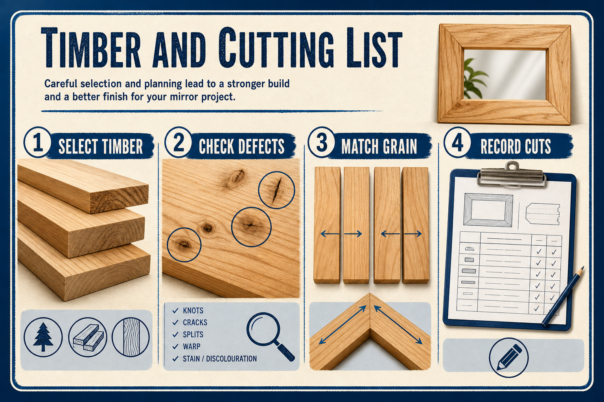

Timber is a natural material. Grain, knots, moisture and defects all affect how it cuts, joins and finishes.
Key Idea
Choosing timber is about stability, appearance, cost and waste.
Softwoods such as pine are commonly used in school projects because they are affordable, easy to machine and suitable for practising skills. Hardwoods can be stronger or more decorative, but they can cost more and be harder on tools.
Why It Matters
Good timber selection reduces warping, weak joints and wasted material. A better board makes the whole project calmer to build.
What To Look For
Straight grain where possible.
Limited knots near joints.
No major cracks, splits or twist.
Boards long enough for the cutting list with minimal waste.
Dry, stable timber that is less likely to shrink or warp.

Select sound timber, check defects, match visible grain and record the cutting plan before marking.
Select timber before you mark it
For a mirror frame, the best board is not simply the cheapest or the prettiest. It needs to be straight, stable and long enough for the required component, with sound timber where joints, rebates and screw holes will be made.
Lay the board on a flat surface and sight along its length. Check for bow, cup and twist before you decide where each component will go. Keep the grain running along the length of the frame members and, where possible, match the visible grain on paired parts.
Useful Terms
Term
Meaning
Grain
The direction and pattern of timber fibres.
Seasoning
Drying timber so it becomes more stable for use.
Defect
A natural or processing fault such as a knot, split, bow or twist.
Yield
The amount of usable timber gained from a board or log.
Timber Choice For The Mirror
For this project, timber needs to be stable enough to stay flat, workable enough for students to cut and joint, and neat enough to finish well. A board that looks cheap at the start can become expensive in time if it is twisted, full of knots, or too short for the cutting list.
Choice
Good For
Watch Out For
Pine / softwood
Practice, school projects, easy cutting, lower cost.
Soft edges, knots, dents and tear-out when tools are blunt.
Hardwood
Stronger frame, attractive grain, more durable finish.
Higher cost, harder cutting, greater need for sharp tools.
Recycled timber
Sustainability, character, reduced waste.
Old nails, hidden cracks, uneven moisture and unknown finish.
Seasoning, Conversion And Waste
Seasoning removes moisture from timber so it is less likely to shrink or twist after the mirror is built. Kiln-dried timber is dried in controlled conditions; air-dried timber dries more slowly and can be less predictable if it has not been stored well.
Timber conversion is the way a log is cut into boards. Plain-sawn timber usually gives a higher yield and lower cost. Quarter-sawn timber often gives straighter grain and better stability, but it wastes more material and costs more. For a mirror frame, students should be able to explain the trade-off between appearance, stability, cost and waste.
Check each board for bow, cup, twist and splits before marking out.
Keep knots away from mortises, tenons, screw holes and thin edges.
Plan cuts so longer pieces are marked first and offcuts are still useful.
Record one reason for the chosen timber in the portfolio.
Material-handling check
Store timber flat, supported and away from damp floors or strong heat. Carry long pieces with awareness of the people and benches around you, and ask for help with awkward lengths.
Select timber that is straight, stable and long enough for the cutting list.Students should check timber for bow, twist, cracks and major defects before marking out.
Guided practice
Timber Materials knowledge checks
Choose an answer and use the feedback. If you need help, revisit the linked theory first, then open the extra hint.
0/3mastered
Apply your learning
Guided written response
Use the sentence starters, make a short attempt, then use the guidance and appropriate response example to improve your own work.
0/1reviewed
Finish this theory topic
Save your evidence
Your answers save in this browser while you work. Download a PDF before moving devices or clearing browser data, then upload it when your teacher asks.